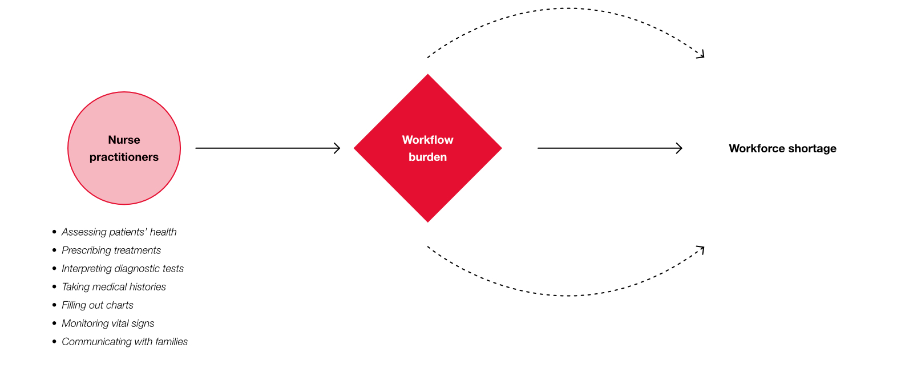
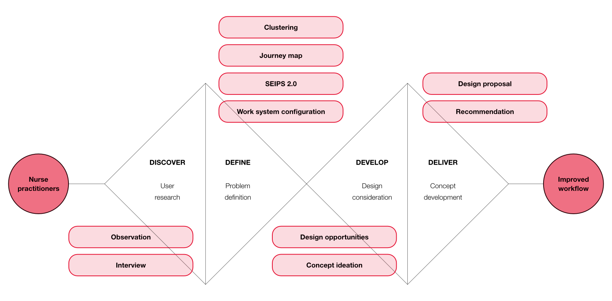

Improving a Day Structure in the Clinic
This project aims to redesign the daily schedule for medical staff at Amsterdam UMC by considering their needs and constraints. We analyzed insights and translated them into design opportunities. As a result, a digital platform, HospiTALK, was designed to foster collaboration and support education among nurses and nurse students.
How might we enhance nurses’ workflow in clinical settings?
Nurses play a vital role in providing primary care under increasingly challenging conditions. With the decline in essential health workers, the workload for nurses continues to grow, creating a cycle where workflow burden leads to workforce shortages, which in turn increases the burden even further. The goal of this project was to analyze existing daily schedules and workflows to identify pain points and opportunities for optimization.

Research process.
The research followed a double-diamond process and a multi-step analytical approach to identify workflow challenges, design opportunities, and potential improvements for nursing practice.


Below are key visuals from the analysis phase: (1) Journey map: identified needs and pain points across the nursing workflow, (2) SEIPS 2.0 model (Holden et al., 2013): analyzed complex interactions and interdependencies among people, tasks, tools, and environment, and (3) work system configuration: explored the current and desired workflow conditions to support future improvements.
Translating pain points into a design goal.
Through this analysis, key pain points were identified. In response, several design opportunities were generated to improve the nursing department’s workflow, communication, and learning environment. Among these opportunities, two were selected to form the design proposal. The resulting design goal focuses on building a supportive community that strengthens nursing education, improves collaboration, and enhances access to senior expertise.

Design proposal of HospiTALK.
As a design outcome, the digital platform HospiTALK was developed to support growth, connectivity, and professional development within hospital environments. Through this platform, nurses and nurse students can learn from one another, exchange knowledge, and build shared expertise. The platform strengthens workforce resilience by creating a sustainable resource pool, supporting continuous professional development, and reducing workload through improved collaboration. The expected impact includes enhanced service quality and greater staff satisfaction.